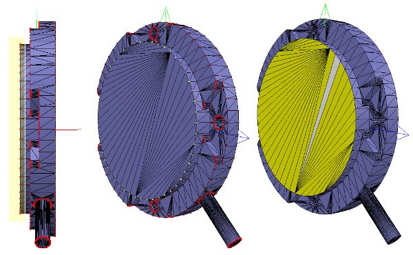
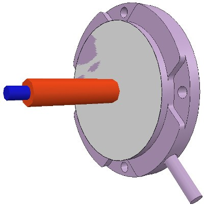
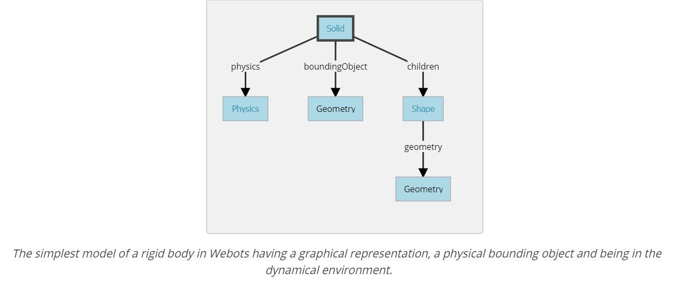
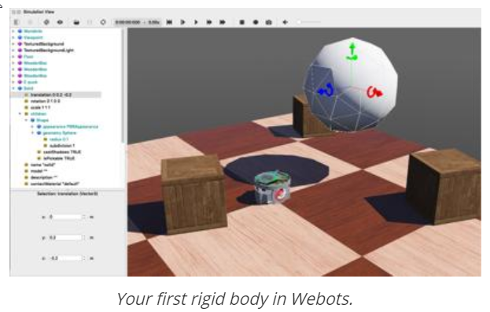
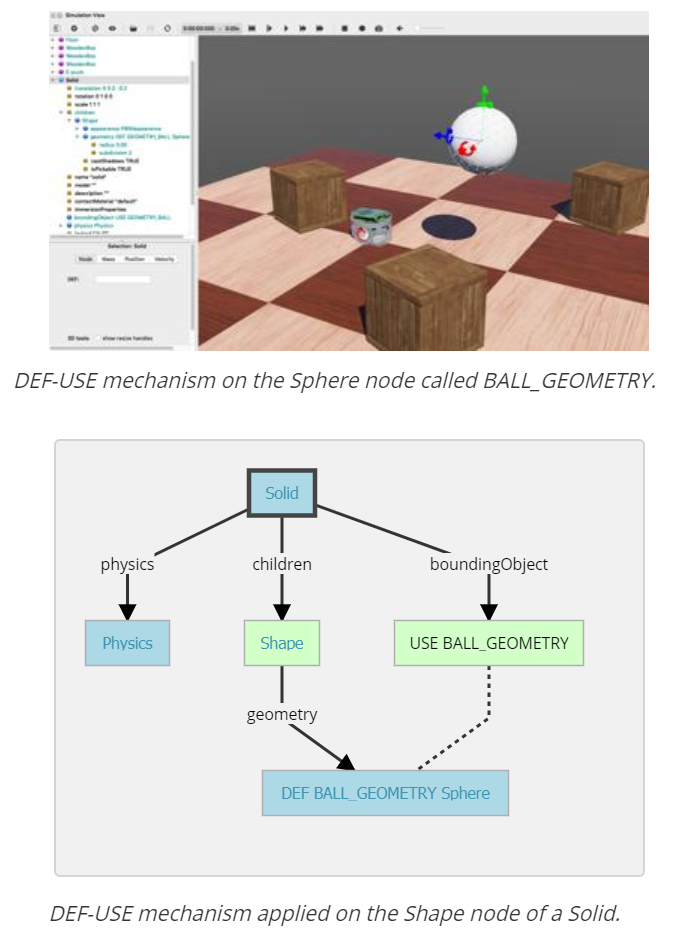
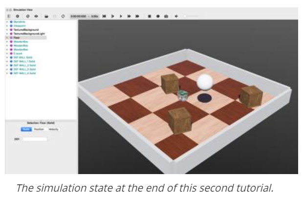

member <<
Previous Next >> Solvespace
W17 協同任務
Building a clean model tutorial
-----------------------------------------------------------------------------------
建立關節 Author: 40623123
使用[菜單欄->添加->關節-> ...]添加關節
位置對話框和方向對話框更改它們的位置和方向。我們可以通過Models / tools / Denavit-Hartenberg聯合creator.ttm中的工具模型來構建關節。
沒有關節位置和方向的信息。然後我們需要從導入的網格打開一個新場景，然後再次導入原始CAD數據
第一步是細分原始網格。
我們通過三角形編輯模式進行。假設我們可以劃分原始網格。我們可以檢查較小的對象。尋找旋轉形狀，可以用作在其位置以相同方向創建關節的參考。刪除所有不需要的。在多個打開的場景中工作也很有用，以便於可視化/操作。
在我們的案例中，我們首先關注機器人的基座：它包含一個圓柱體，該圓柱體的第一個關節的位置正確。在三角形編輯模式下，我們有：

[機器人基礎：法線和三角形編輯模式可視化]
通過頁面選擇器 工具欄按鈕更改相機視圖
擬合到視圖工具欄按鈕可以派上用場正確幀在版的對象。然後切換到頂點編輯模式，並選擇屬於上光盤的所有頂點。通過打開/關閉某些層，我們可以隱藏場景中的其他對象。然後我們切換回三角形編輯模式：

[選擇的上光盤，頂點編輯模式（1和2），三角形編輯模式（3）]
單擊“ 提取圓柱體”（這情況下，“ 提取形狀”也將起作用）
據選定的三角形在場景中創建了圓柱體形狀。離開編輯模式放棄更改。通過[菜單欄->添加->關節->旋轉]添加旋轉關節，保持選中狀態，控制選擇提取的圓柱形狀。在位置對話框的“ 位置”選項卡上，單擊“ 應用於選擇”：這基本上將圓柱體的x / y / z位置複製到關節。兩個位置都相同。在“ 方向”對話框的“ 方向”選項卡上，我們還單擊“ 應用於選擇”
需要圍繞其自身的參考框架額外旋轉關節90/180度，以獲得正確的方向或旋轉方向。如果需要，我們可以在該對話框的“ 旋轉”選項卡上執行此操作（在這種情況下，請不要忘記單擊“ 自有框架”按鈕）。同樣，我們也可以沿關節的軸移動關節，甚至進行更複雜的操作。

[在正確的位置，以正確的方向接合]
關節複製回到原始場景中，並保存
所有關節重複上述過程，重命名。
通過默認，關節將分配給可見性層2，可以在對象的公共屬性中進行更改。將所有關節分配給可見性層10，為場景臨時啟用可見性層10，以使這些關節也可視化。
[接頭配置正確]
開始構建模型層次結構完成模型定義。如果希望動態啟用 opur機器人
**************************************************************
建立可見的模型 Author: 40723137
點選菜單>添加>基本形狀 在CoppeliaSim建立基本模型
建立時有兩項選擇可選：
純形狀：針對動態進行優化，也可啟用動態應用
基本形狀：為簡單的網格，較無精確度
過於複雜的形狀會使模型計算速度緩慢
上圖有上萬個三角形架構，有如此多三角形的原因是有些細小特徵所導致的，可透過刪除簡化他們，CoppeliaSim支持OBJ，STL，DXF，3DS（僅Windows）和Collada。還支持URDF
盡可能簡化後若還是太多網格，可使用其他農具進行近一步簡化
自動網格劃分：
可透過菜單>編輯>分組/合併>分割所選形狀使用，若分割太多則可以使用合併接合回一個形狀
提取凸包：
通過將模型轉換為凸包來簡化
使用步驟：菜單>編輯>將選擇模型轉化為凸包
抽取網格：
減少三角形網格的量
使用步驟：菜單>編輯>縮小所選形狀
刪除網格內部：
透過刪除內部來簡化網格數
使用步驟：菜單>編輯>提取所選形狀的內部
範例：
先將模型就行網格抽取，將三角形數量除以50，並提取內部形狀並丟棄
再使用自動或手動進行網格劃分
再進一步簡化單獨形狀
因為有孔特徵因此較難簡化，這種強況下可使用形狀編輯模式，可以在這個模式中忽略一些三角形，可以先提取3個類似元素，以便在形狀編輯中可切換可見行圖層查看場景內容
得到形狀總和後，分別提取凸包，擦除作為孔的小部分三角形後進行合併
在CoppeliaSim中可以啟用/禁用每種形狀邊緣顯示，也可以更改顏色讓使用者更好辨識
接著合併相同屬性(同特性)可透過編成更改顏色方便操作接著使用 菜單>分組/合併>分組所選形狀對同一鏈接的形狀分組
創建或修改形狀時，CoppeliaSim將自動設置其參考框架的位置和方向。
形狀的參考框架將始終位於形狀的幾何中心。選擇框架方向，以便形狀的邊界框保持盡可能小。
我們也隨時可以隨時調整形狀的參考框架的方向。現在可以使用[菜單欄->編輯->重定向邊界框->使用世界參考框架]重新調整所有已創建形狀的參考框架。


***************************************************************
Building the dynamic shapes Author: 40723147
建立動態形狀
If we want our robot to be dynamically enabled, i.e. react to collisions, fall, etc., then we need to create/configure the shapes appropriately: a shape can be: 
如果我們希望我們的機器人能夠動態啟用，即對碰撞，跌落等做出反應，那麼我們需要適當地創建/配置形狀：形狀可以是：
dynamic or static(動態或靜態)
a dynamic (or non-static) shape will fall and be influences by external forces/torques.
動態（或非靜態）形狀會掉落並受到外力/扭矩的影響。
A static (or non-dynamic) shape on the other hand, will stay in place, or follow the movement of its parent in the scene hierarchy.
靜態（或非動態）形狀將保持不變，或跟隨其父級在場景層次中的移動。
respondable or non-respondable:(可響應或不可響應)
a respondable shape will cause a collision reaction with other respondable shapes.
可響應形狀會引起與其他可響應形狀的碰撞反應。
non-respondable shapes will not compute a collision response if they collide with other shapes.
不可響應的形狀如果與其他形狀發生碰撞，則不會計算碰撞響應。
Above two points are illustrated here. Respondable shapes should be as simple as possible, in order to allow for a fast and stable simulation.
以上說明了兩點。 可響應的形狀應盡可能簡單，以實現快速穩定的仿真。
A physics engine will be able to simulate following 5 types of shapes with various degrees of speed and stability:
物理引擎將能夠以不同的速度和穩定性模擬以下5種類型的形狀：
Pure shapes: (純形狀)
Pure compound shapes:(純複合形狀)
Convex shapes:(凸形狀)
Compound convex shapes, or convex decomposed shapes:(複合凸形狀或凸分解形狀)
Random shapes:(隨機形狀)
the order of preference would be: pure shapes, pure compound shapes, convex shapes, compound convex shapes, and finally random shapes.
優先順序為：純形狀，純複合形狀，凸形，複合凸形，最後是隨機形狀。
*************************************************************************
Model definition Author: 40723142
型號定義
Attach the dynamic robot link to its corresponding joint
將一個動態機器人鏈接附加到其相應的關節
And so on until it reaches the bottom of the robot
依此類推，直到到達機器人的底部
Enable "object-based model" in object public properties
在對象公共屬性中啟用“ 對象為模型基礎”
Select the model and modify its position / direction appropriately
選擇模型並修適當地改其位置/方向
Click Enable Motor and adjust the maximum torque. Then, click on "Enable
Control Loop" and select "Position Control (PID)"
單擊“ 啟用電動機”並調整最大扭矩。然後，點擊“ 啟用控制環”，然後選擇“ 位置控制（PID）”
Use the Dynamic Content Visualization and Validation toolbar buttons to
verify scene dynamic content.
通過“ 動態內容可視化和驗證”工具欄按鈕來驗證場景動態內容。
We can also control / access / interface models through plugins,
remote API clients, ROS nodes, BlueZero nodes or add-ons.
我們還可以通過插件，遠程API客戶端，ROS節點，BlueZero節點或附加組件來控制/訪問
/接口模型。
Webots Tutorial
Model definition Author: 40723134
Tutorial 2: Modification of the Environment (教程2：修改環境)
In this tutorial, we will teach you how to create simple objects in the environment.在本教程中，我們將教您如何在環境中創建簡單對象。
The first step will be to create a ball which will interact with the environment. 第一步將是創建一個與環境互動的球。
We will tackle several concepts related to the nodes: 我們將處理與節點有關的幾個概念：what is their meaning, how to create them, how they have to be affiliated, etc. Moreover we will see how to set up physics.
它們的含義，如何創建它們，必須如何關聯它們等等。此外，我們還將了解如何設置物理學。
Several kinds of nodes will be introduced.
將介紹幾種節點。
Their detailed definition can be found in Reference Manual.
它們的詳細定義可以在參考手冊中找到。
Having the nodes chart diagram in front of you, will also help understanding the nodes inheritance relationship.
在您面前擁有節點圖表，也將有助於理解節點繼承關係。
Index(指數)
A New Simulation(新的模擬)
Modifying the Floor(修改地板)
The Solid Node(實體節點)
Create a Ball(創建一個球)
Geometries(幾何形狀)
DEF-USE Mechanism(定義使用機制)
Add Walls(添加牆)
Solution: World File(解決方案：世界文件)
Efficiency(效率)
Conclusion(結論)
A New Simulation(新的模擬)
First we create a new simulation based on the one created in Tutorial 1.
首先，我們根據教程1中的模擬創建一個新的模擬。
Hands-on #1(操作1)：
Make sure the my_first_simulation.wbt world file is open, and that the simulation is paused and is at a virtual time of 0.
確保打開了my_first_simulation.wbt world檔案，暫停模擬並且處於虛擬時間0。
Using the File / Save World As... menu, save the simulation as obstacles.wbt.
使用“文件/另存World檔案為...”，將模擬保存為obarriers.wbt。
Modifying the Floor(修改地板)
The default RectangleArena PROTO defines a simple floor pinned on the static environment, i.e. without Physics node, and surrounded by walls.
默認的RectangleArenaPROTO定義了一個固定在靜態環境上的簡單地板，即沒有Physics節點並且被牆壁包圍。
Other pre-built floors are available in the Webots objects library. Webots對像庫中提供了其他預建地板。
We will now delete the RectangleArena node and add a simple floor that we will manually surround with walls later in this tutorial.
現在，我們將刪除RectangleArena節點，並添加一個簡單的地板，在本教程的後面部分將用牆手動將其包圍。
Hands-on #2(操作2)：
To remove the RectangleArena, select it either in the 3D view or in the scene tree view with a left click and press the Delete key on your keyboard. 要刪除RectangleArena，請在3D視圖或場景樹狀圖中單擊鼠標左鍵將其選中，然後按鍵盤上的Delete鍵。
Alternatively, you can right click on it in the 3D view and select Delete in the context menu (you can also use the context menu directly in the scene tree view).
或者，可以在3D視圖中右鍵單擊它，然後在上下文菜單中選擇“刪除”（也可以直接在場景樹視圖中使用上下文菜單）。
Select the TexturedBackroundLight node and click on the Add button.
選擇TexturedBackroundLight節點，然後單擊“添加”按鈕。
In the open dialog box, and choose PROTO nodes (Webots Projects) / objects / floors / Floor (Solid).
在打開的對話框中，然後選擇PROTO節點（Webots Projects）/對象/ Floors / Floor（Solid）。
The newly added Floor PROTO has a default size of 10mx10m, but it is possible to adjust its size, its position and texture by changing the corresponding fields.
新添加的FloorPROTO的默認大小為10mx10m，但是可以通過更改相應的字段來調整其大小，位置和紋理
Hands-on #3(操作3)：
In the scene tree view select and expand the Floor. Modify the size field and set it to {1, 1} to resize it to 1mx1m.
在場景樹狀圖中，選擇並展開“地板”。 修改大小字段並將其設置為{1，1}以將其大小調整為1m x1m。
The Solid Node(實體節點)
This subsection introduces the most important base node in Webots: the Solid node, from which many other nodes derive.
本小節介紹了Webots中最重要的基礎節點：Solid節點，許多其他節點都來自Solid節點。
A Solid node represents a rigid body, that is a body in which deformation can be neglected.
固體節點代表一個剛體，即在其中變形可以忽略不計的主體。
The distance between any two given points of a rigid body remains constant in time regardless of external forces exerted on it. For example a table, a robot finger phalanx or a wheel are rigid bodies. 剛體上任意兩個給定點之間的距離在時間上保持恆定，而不管施加在其上的外力如何。
Soft bodies and articulated objects are not rigid bodies.例如，桌子，機械手指骨或輪子是剛體。軟體和關節物體不是剛體。
For example, a rope, a tire, a sponge or an articulated robot arm are not rigid bodies
例如，繩索，輪胎，海綿或關節式機械臂不是剛性體。 However, an articulated entity can be broken into several rigid bodies.
但是，可以將一個鉸接的實體分解為幾個剛體。
The physics engine of Webots is designed for simulating rigid bodies only. 要定義剛體，您將必須創建一個實體節點。
An important step, when designing a simulation, is to break up the various entities into separate rigid bodies.
設計仿真時，重要的一步是將各個實體分解為單獨的剛體。
To define a rigid body, you will have to create a Solid node.
要定義剛體，您將必須創建一個實體節點。
Inside this node you will set up different sub-nodes corresponding to the characteristics of the rigid body.
在此節點內，您將根據剛體的特性設置不同的子節點。
The following figure depicts a rigid body and its sub-nodes.
下圖描繪了剛體及其子節點。
The graphical representation of the Solid node is defined by the Shape nodes populating its children list.
實體節點的圖形表示由填充其子級列表的Shape節點定義。
The collision bounds are defined in its boundingObject field.
碰撞範圍在其boundingObject字段中定義。
The graphical representation and the collision shape are often but not necessarily identical.
圖形表示和碰撞形狀通常但不一定相同。
Finally, the physics field defines if the object belongs to the dynamical or to the static environment.
最後，該physics字段定義對像是屬於動態環境還是屬於靜態環境。
All these sub-nodes are optional, but the physics field needs the boundingObject to be defined.
所有這些子節點都是可選的，但是physics需要boundingObject定義該字段。

The Geometry box (in this figure) stands for any kind of geometrical primitive. In fact, it can be substituted by a Sphere, a Box, a Cylinder, etc.
Create a Ball(創建一個球)
We will now add a ball to the simulation.
現在，我們將球添加到模擬中。
That ball will be modeled as a rigid body as shown in this figure.
如原本那個球將被建模為剛性體圖。
A Sphere node will be used to define the geometry of our ball.
一球節點將被用來定義我們的球的幾何形狀。
Hands-on #4(操作4)：
In the scene tree view, select the last node and press the Add button.
在場景樹狀圖中，選擇最後一個節點，然後按Add按鈕。
In the dialog, open the Bases nodes section and select the Solid node.在對話框中，打開該Bases nodes部分，然後選擇“ 實體”節點。
In the scene tree view, expand the Solid node and select its children field.
在場景樹視圖中，展開“ 實體”節點並選擇其children字段。
Add a Shape node to it by using the Add button.
使用按鈕向其添加一個Shape節點Add。
Select the appearance field of the Shape node and use the Add button to add a PBRAppearance node.
選擇“ 形狀”節點的appearance字段，然後使用按鈕添加一個節點。
Add a Sphere node as the geometry field of the newly created Shape node.
將球體節點添加為geometry新創建的形狀節點的字段。
Expand the PBRAppearance node and change its metalness field to 0 and its roughness field to 1.
展開PBRAppearance節點並將其metalness字段更改為0，並將其roughness字段更改為1。
Add another Sphere node to the boundingObject field of the Solid.
將另一個Sphere節點添加到Solid的boundingObject字段。
Finally add a Physics node to the physics field of the Solid.
最後，將一個Physics節點添加到Solid的physics字段中。
By modifying the translation field of the Solid node, place the ball in front of the robot (at {0, 0.2, -0.2} for example).
通過修改實體節點的translation字段，將球放在機器人的前面（例如）。{0, 0.2, -0.2}
Save the simulation.
保存模擬。
The result is depicted in this figure.
結果如圖所示。

Model definition Author: 40723150
When the simulation is started, the ball hits the floor.
當模擬開始時，球擊中地板。
You can move the ball by applying a force to it (Ctrl + Alt + left-click + drag).
您可以通過向球施加力來移動球（Ctrl + Alt +左鍵單擊+拖動）。
The contact points between the ball and the floor can be displayed as cyan lines by enabling the View / Optional Rendering / Show Contact Points menu item.
通過啟用“查看/可選渲染/顯示接觸點”菜單項，可以將球和地板之間的接觸點顯示為青色線。
Geometries(幾何形狀)
To define the ball, we used the Sphere node in two different contexts(為了定義球，我們在兩個不同的上下文中使用了Sphere節點)：
for the graphical representation (children) and to define the physical bounds (boundingObject). 用於圖形表示（子代）並定義物理邊界（boundingObject）。
All Geometry nodes (such as the Sphere node) can be used in a graphical context.
所有Geometry節點（例如Sphere節點）都可以在圖形上下文中使用。
However, only a subset of them can be used in a physical context.
但是，它們的子集只能在物理環境中使用。
The nodes chart diagram indicates which nodes are supported in each context.
節點圖表顯示了每個上下文中支持哪些節點。
We are now going to reduce the size of the Sphere and increase its graphical quality by increasing the number of triangles used to represent it.
現在，我們將通過增加用於表示球體的三角形的數量來減小球體的大小並提高其圖形質量。
Hands-on #5(操作5)：
For each Sphere node defining the ball, set its radius field to 0.05 and its subdivision field to 2.
對於定義球的每個Sphere節點，將其半徑字段設置為0.05，並將其細分字段設置為2。
Refer to the Reference Manual to understand what the subdivision field stands for.
請參閱《參考手冊》以了解細分字段的含義。
DEF-USE Mechanism(定義使用機制)
The DEF-USE mechanism allows to define a node in one place and to reuse that definition elsewhere in the scene tree.
DEF-USE機制允許在一個位置定義節點，並在場景樹的其他位置重用該定義。
This is useful to avoid the duplication of identical nodes in world files.
這對於避免在世界文件中復制相同節點很有用。
Moreover, it also allows users to modify several objects at the same time.
此外，它還允許用戶同時修改多個對象。
Here is how it works: first a node is labeled with a DEF string.
它是這樣工作的：首先用DEF字符串標記節點。
Then copies of this node can be reused elsewhere with the USE keyword.
然後，可以使用USE關鍵字將該節點的副本重用於其他地方。
Only the fields of the DEF node can be edited, the fields of the USE inherit from the DEF node and cannot be changed.
只能編輯DEF節點的字段，USE的字段從DEF節點繼承，並且不能更改。
This mechanism is dependent on the order of the nodes in the world file.
該機制取決於world文件中節點的順序。
A DEF node should be defined before any corresponding USE node.
應在任何相應的USE節點之前定義DEF節點。
The two Sphere definitions that we have used earlier to define the ball, are redundant.
我們之前用來定義球的兩個Sphere定義是多餘的。
We will now merge these two Spheres into only once using the DEF-USE mechanism.
現在，我們將使用DEF-USE機制將這兩個Sphere合併為一次。
Hands-on #6(操作6)：
Select the first Sphere node (the child of the Shape) in the scene tree view. 在場景樹視圖中選擇第一個“球體”節點（“形狀”的子級）。
The field editor of the scene tree view allows you to enter the DEF string.
場景樹視圖的字段編輯器允許您輸入DEF字符串。
Enter BALL_GEOMETRY in this field.
在此字段中輸入BALL_GEOMETRY。
Select the boundingObject field (containing the second Sphere node), and empty it by right clicking the field in the scene tree and choosing the Delete entry in the context menu that pops up.
選擇boundingObject字段（包含第二個Sphere節點），並通過右鍵單擊場景樹中的字段並在彈出的上下文菜單中選擇“刪除”條目來將其清空。
Then, select the boundingObject field and click on the Add button, and select the USE / BALL_GEOMETRY in the dialog box.
然後，選擇boundingObject字段，然後單擊“添加”按鈕，然後在對話框中選擇USE / BALL_GEOMETRY。
The result is shown in this figure.
結果如圖所示。
Now, changing the radius field of the first Sphere node also modifies its boundingObject.
現在，更改第一個Sphere節點的半徑字段也會修改其boundingObject。
For convenience, the boundingObject field accepts also the Shape node (rather than the Sphere node directly). 為了方便起見，boundingObject字段還接受Shape節點（而不是直接接受Sphere節點）。
It would be also possible to use the same DEF-USE mechanism at the Shape level as shown in this figure.
如圖所示，也可以在Shape級別使用相同的DEF-USE機制。
For now the greatest benefit is being able to also use this Shape directly for graphical purposes.
到目前為止，最大的好處就是也可以直接將此Shape用於圖形目的。
Later this mechanism will turn out to be very useful for some sensors.
後來，對於某些傳感器，該機制將變得非常有用。

Hands-on #7(操作7)：
Create a second ball with the same parameters but using the Shape node (rather than the Sphere node directly) for the DEF-USE mechanism.
使用DEF-USE機制的Shape節點（而不是直接使用Sphere節點）創建具有相同參數的第二個球。
Add Walls(添加牆)
In order to verify your progression, implement by yourself four walls to surround the environment.
為了驗證您的進度，請自己實施四堵牆以包圍環境。
The walls have to be defined statically to the environment.
必需根據環境靜態定義牆壁。
To understand the difference between static and dynamic, let's take a defined object (the ball) above the ground.
要了解靜態和動態之間的區別，我們將定義的物體（球）放在地面上方。
If the Physics node is NULL, it will remain frozen in the air during the simulation (static case).
如果“物理”節點為NULL，則在仿真過程中它將保持凍結狀態（靜態情況）。
If the physics field contains a Physics nodes, it will fall under the effect of gravity (dynamic case).
如果物理場包含“物理”節點，則它將受重力作用（動態情況）。
Use as much as possible the DEF-USE mechanism at the Shape level rather than at the Geometry level.
在Shape級別而不是Geometry級別，盡可能使用DEF-USE機制。
Indeed it's more convenient to add an intermediate Shape node in the boundingObject field of the Solid node.
實際上，在Solid節點的boundingObject字段中添加中間Shape節點更為方便。
The best Geometry primitive to implement the walls is the Box node.
實現牆的最佳幾何原語是Box節點。
Only one Shape has to be defined for all the walls.
所有牆壁僅需定義一個形狀。
The expected result is shown in this figure.
預期結果如圖所示。
Hands-on #8(操作8)：
Add four walls without physics and using only one definition of the Shape node.
添加四個沒有物理作用的牆，並且僅使用“形狀”節點的一個定義。
Solution: World File(解決方案：世界文件)
To compare your world with the solution, go to your files and find the folder named "my_first_simulation" created in Tutorial 1, then go to the "worlds" folder and open with a text editor the right world.
要將您的世界與解決方案進行比較，請轉到文件，找到在教程1中創建的名為“ my_first_simulation”的文件夾，然後轉到“ worlds”文件夾，並使用文本編輯器打開正確的世界。
This solution as the others is located in the solution directory.
與其他解決方案一樣，該解決方案位於解決方案目錄中。

Efficiency(效率)
The simulation of rigid bodies is computationally expensive.
剛體的模擬在計算上是昂貴的。
The simulation speed can be increased by minimizing the number of bounding objects, minimizing the constraints between them (more information about the constraints in the next tutorials), and maximizing the WorldInfo.
可以通過以下方法來提高仿真速度：最小化邊界對象的數量，最小化邊界對象之間的約束（有關下一個教程的約束的更多信息），並最大化WorldInfo。
basicTimeStep field.
basicTimeStep字段。
On each simulation, a trade-off has to be found between simulation speed and realism.
在每個模擬中，必須在模擬速度和真實性之間找到一個折衷。
Conclusion(結論)
At the end of this tutorial, you are able to create simple environments based on rigid bodies.
在本教程的最後，您將能夠基於剛體創建簡單的環境。
You are able to add nodes from the scene tree view and to modify their fields.
您可以從場景樹視圖添加節點並修改其字段。
You have become acquainted with the Solid, Physics, Shape, Sphere and Box nodes.
您已經熟悉了“實體”，“物理”，“形狀”，“球體”和“盒子”節點。
You also saw the DEF-USE mechanism that allows to reduce node redundancy of the scene tree.
您還看到了DEF-USE機制，該機制可減少場景樹的節點冗餘。
member <<
Previous Next >> Solvespace